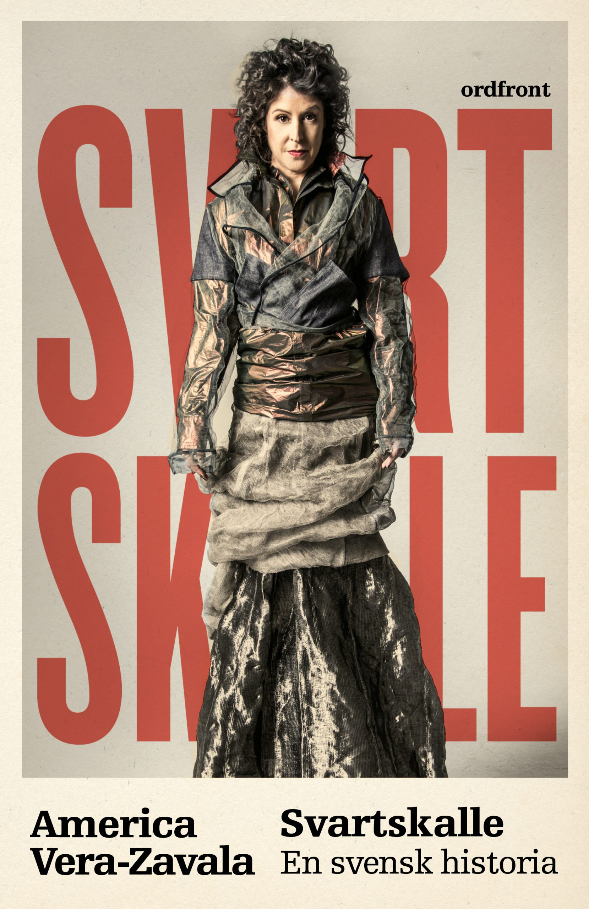
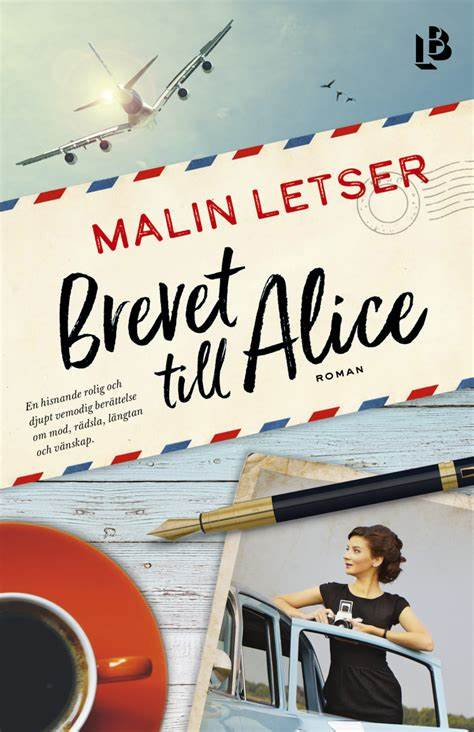
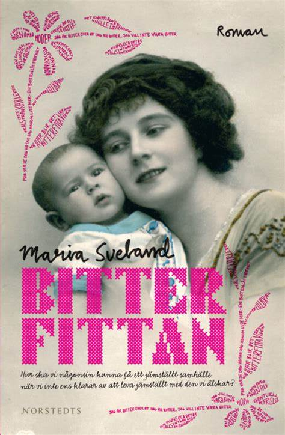
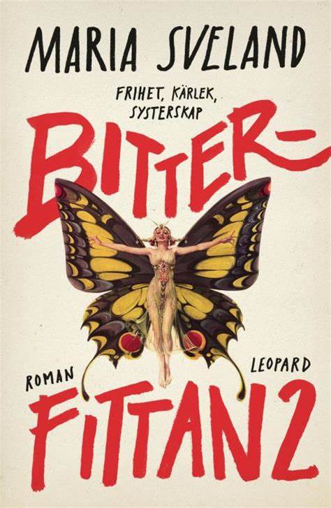
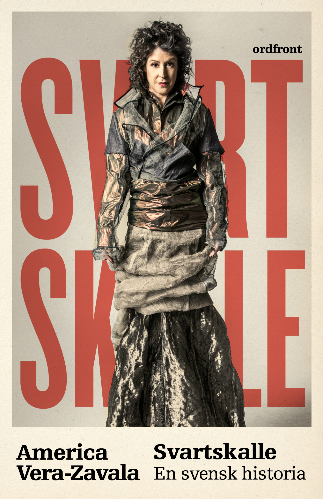
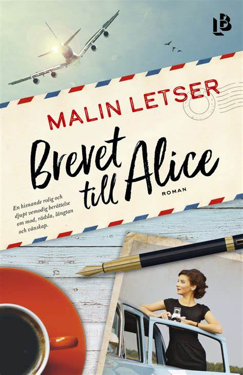
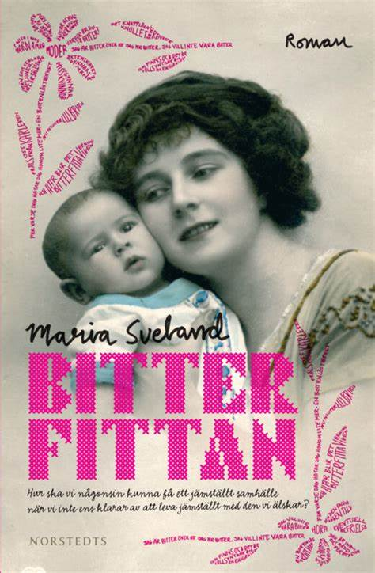
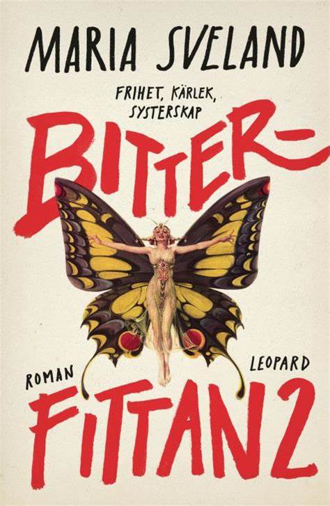

America Vera-Zavala
Född 16 januari 1976 i Rumänien, är en svensk politiker
(vänsterpartist), författare och debattör. Vera-Zavala är kolumnist på den
socialistiska tidningen Flamman och politisk aktivist inom rörelsen för global rättvisa samt en av grundarna av den svenska grenen av organisationen
Attac.

Svartskalle - en svensk historia
is a book i wish everyone would read. It gives an important
perspective on racism in sweden.
Malin Letser
Malin Letser är född 1985 och bor i Stockholm där hon arbetar som skribent.
Brevet till Alice är hennes debutroman.

Brevet till Alice is an amazing debut that made me laugh and cry. I can´t wait to see what
Letser comes up with next.
Maria Sveland

Bitterfittan and Bitterfittan 2, funny and devestating about trying to have an equal heterosexual
relationship in a patriarchy.
America Vera-Zavala
Född 16 januari 1976 i Rumänien, är en svensk politiker (vänsterpartist), författare och debattör. Vera-Zavala är kolumnist på den socialistiska tidningen Flamman och politisk aktivist inom rörelsen för global rättvisa samt en av grundarna av den svenska grenen av organisationen Attac.

Svartskalle - en svensk historia is a book i wish everyone would read. It gives an important perspective on racism in sweden.
Malin Letser
Malin Letser är född 1985 och bor i Stockholm där hon arbetar som skribent. Brevet till Alice är hennes debutroman.

Brevet till Alice is an amazing debut that made me laugh and cry. I can´t wait to see what Letser comes up with next.
Maria Sveland

Bitterfittan and Bitterfittan 2, funny and devestating about trying to have an equal heterosexual relationship in a patriarchy.